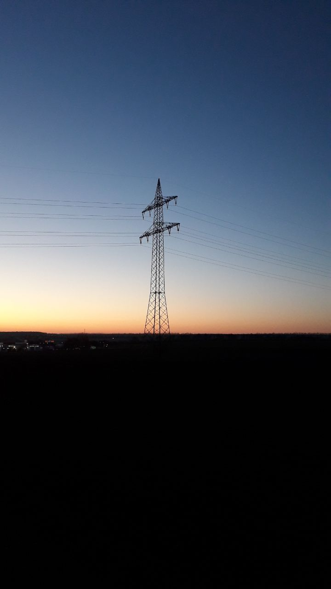

Dem Sonnenaufgang Entgegen
I experienced for the first time a night walk when I joined the Italian collective Mala for their night ritual organised for the Walking Encounters Congress in Prespes, Greece. The ritual of collectively embracing the perceptual impulses that the night time has to offer was an eye-opening experience. Therefore I decided to continue the practice with this series of walks that welcome the sunrise at four crucial days of the year, during the winter & summer Solstice and during the spring and autumn Equinox. I guide the group through a landscape that is gradually changing due to the approaching sun.
Winter Solstice Walk with Anne, Beate, Paloma & René
Walking through the dark forest we had to walk along the fence of an abandoned camp ground to be able to follow our path. Although it was wintertime, meaning that no visitors were there, there was a bright spotlight pointed on the fence. Making our way up in silence we could all feel the slightly uncomfortable feeling of doing something half illegal that was being exposed.
After walking through the pitchdark forest with its unfamiliar sounds, we reached a clearing with view over a lake, at the moment the sun was peeking over the horizon. With the first rays of light our unease disappeared.
Walkers on Spring Equinox walk: Beate, Joaquin, Lina, Milad, Sophie
Just starting a couple of hours before the German government decided to shut down the country due to the Covid-19 virus, a group of walkers gathered in the deserted streets of Weimar. Having followed the river Ilm for a while, the route took us through a small forest in which Goethe used to come for his strolls. At the end of our path there was a red light marking our directions. One recognized it as an approaching car, another as an illuminated rock, and yet another as a bonfire. Nearing the end of the woods the mysterious light revealed itself to be a tiny clipping of the glowing sunrise-sky. With the ground still frozen and the frost covering the fields, the rising sun warmed up our joints and turned lakes in fog machines.

Spring Equinox
